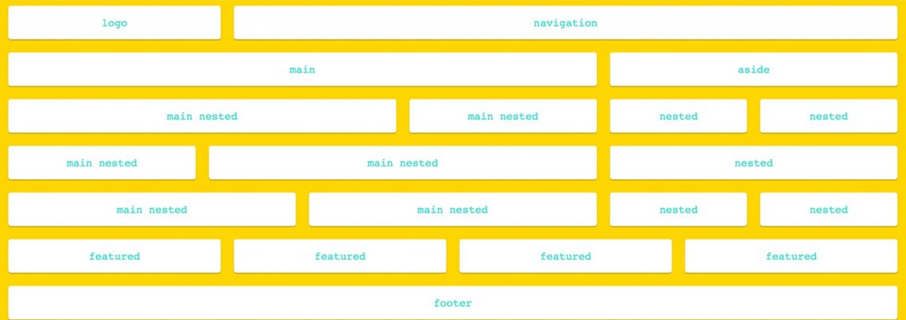

Technical Blog Part 2
9th July 2016
CSS Frameworks and Responsive Design
Questions to Answer
What is grid based design?
Using a grid structure with content inside grid elements can be beneficial in the layout of an html page. This is called grid based design. The simplest form of grid based design is with a table where elements line up neatly in columns and rows. The 12 column layout is the most common as it allows for easy establishment of sites with different column widths. A single column is the smallest container, with larger containers easily made by using multiple columns together.


If there are many different sized areas, the flex model can be used. In a flex-box, columns and rows can be different in size, and will be layed out one after another (often on top of each other). This model can be used to have a bunch of rows, with columns inside them of different widths.
 Click HERE for a great flex-box resource.
Click HERE for a great flex-box resource.
Responsive webpages! Whats all the Hype?
With people browsing the internet more on tablets and mobile phones than ever before, web developers are faced with the challenge of designing a webpage to suit various screen sizes.
Responsive webpages can solve this issue. The page is intially designed with a mobile layout in mind, but then allows the developer to change the layout of a page based on the size of viewers screen (in pixels). Thus allowing the webpage to spead out horizontally as more screen real estate becomes available.
Semantic structure
When writing an HTML page, using elements for their intended purpose is good semantic structure. This means using "nav.../nav" for a section that contains all the navigation elements of the page. Basically, the tag being used should reflect the type of content that is referring to.
Extra interesting things
It's possible to reset the CSS across all browsers to allow you page to work on a level playing field, reducing the possibility of werid things happening to your page when it is displayed in different browsers. A CSS framework named, normalize.css simplifies this process dramatically.
There are many CSS frameworks available to help you quickly build a professional looking and well laid out website, however there are two frameworks which currently dominate the front-end web development scene. These are Bootstrap and Foundation
Nick Pettit from TeamTreeHouse has a great write up on the differences between Bootstrap and Foundation, I highly recommend giving it a read.